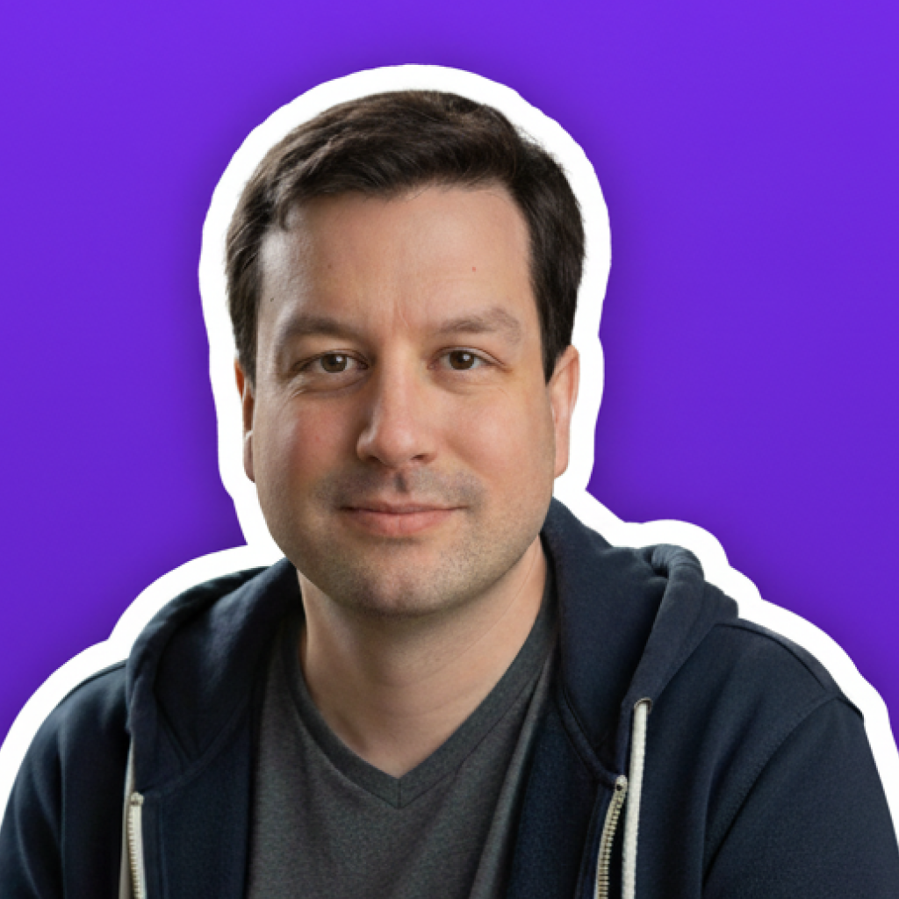
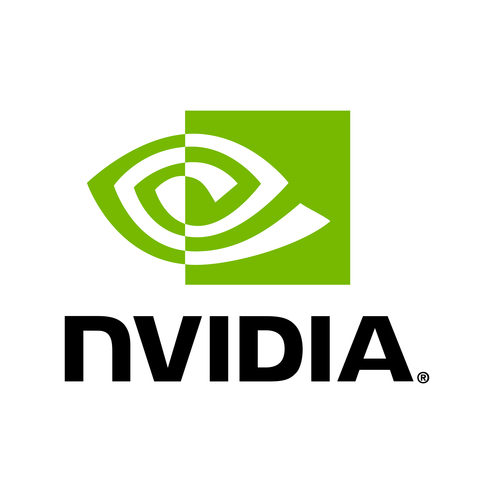

2026
Os Insights de São Francisco que vão Impactar o Futuro da IA

Paulo Hecht
CPO & Co-Founder

Começou antes de começar…
Boardy: O agente que me telefonou!


Ray Kurzweil
futurista
• AGI chega até 2029!
• Crescimento exponencial de compute desde 1939 (hardware + software se compõem)
• Vamos ver controle neural não-invasivo nos anos 2030
• "A maioria das pessoas subestimou o ritmo porque não pensa de forma exponencial"
A perspectiva da exponencialidade


264 = 18.446.744.073.709.551.615

Al Gore
45º vice presidente dos EUA
• IA é o "momento copernicano" da humanidade - tecnologia mais consequente já criada
• Não faz sentido pausar. A posição de Gore: em vez de frear, precisamos "mirar mais alto"
• Constituição pública para modelos pioneiros - transparência, accountability, governança


Jensen Huang
ceo @ nvidia
• 5 camadas: Energia, Chips, Infra, Modelos, Aplicação.
• Aplicação é onde está o maior impacto. IA vira ferramenta.
• 3 ondas: Geração de conteúdo, Raciocínio Contextualizado, Realizar Tarefas.
• "Em 1 a 2 anos, um CEO não-técnico poderá descrever um problema e a IA executará do início ao fim."


Michael Truell
ceo @ cursor
• Objetivo do Cursor é ser a melhor maneira de programar com IA, em um movimento de ferramentas de produtividade para agentes autônomos.
• 65–70% do código de clientes enterprise já é gerado por IA
• "Podemos esperar automações equivalentes nas áreas de finanças, recrutamento, legal e outras funções."
Mas o que significa vibe coding?

↗ mudar para o Cursor